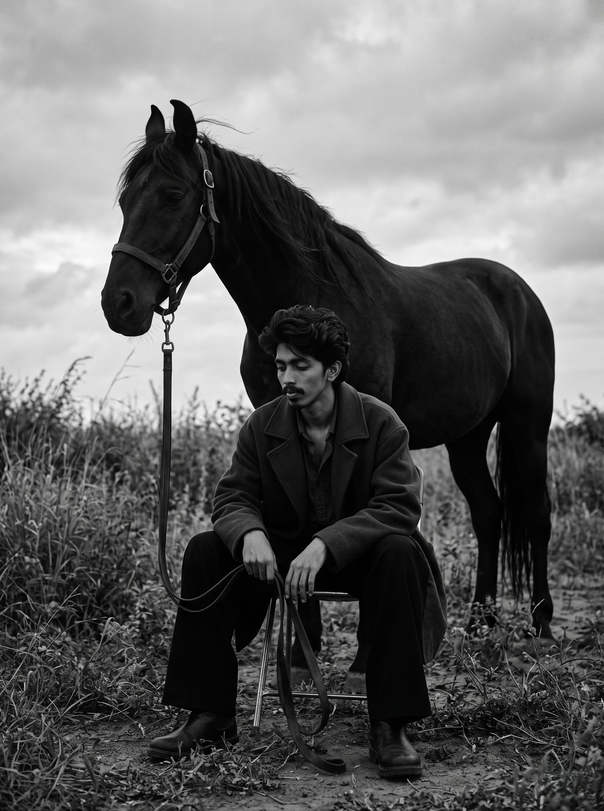

DISCIPLINE / 01
Core Technologies
The foundational languages of the web—used to craft clean markup, fluid grid and flexbox layouts, and dependable client-side logic without unnecessary abstraction.
I'm Kishan Nayaka, a front-end web developer focused on building thoughtful, responsive, and visually refined digital experiences.
Kishan Nayaka
Place 1000077545.jpg in the same folder as index.html, or select it below to render immediately.
Kishan Nayaka
Front-End Web Developer
Translating visual direction into resilient, accessible, and responsive front-end architecture where every interaction feels deliberate.

Editorial Plate I
Place 1000077547.jpg in the same directory as index.html, or select the image file below.
I approach front-end development as the intersection of visual craftsmanship and disciplined UI engineering. For me, a great interface does more than look refined in a static mockup—it responds fluidly across viewports, respects keyboard and assistive technology users, and remains clean under the hood.
Based in Chitradurga, Karnataka, I focus on building modern web interfaces with HTML5, CSS3, JavaScript, React, and Next.js. Whether structuring semantic document hierarchies, refining micro-interactions, or organizing reusable component systems, I care deeply about bridging the gap between design intent and production reality.
I thrive in collaborative environments alongside designers, founders, and product engineers—bringing curiosity, continuous learning, and a calm focus on detail to every stage of a build.
Faithful translation of typography, spacing rhythms, and visual hierarchy into resilient CSS and modular components.
Mobile-first layouts engineered to adapt naturally from compact 320px screens to expansive desktop monitors.
Semantic landmarks, keyboard navigability, clear focus states, and respect for reduced-motion preferences.
Lean DOM structures, restrained asset loading, and smooth interactions that never compromise readability.
Organized by architectural discipline—combining strong web fundamentals with modern component frameworks and purposeful motion design.
The foundational languages of the web—used to craft clean markup, fluid grid and flexbox layouts, and dependable client-side logic without unnecessary abstraction.
Modern UI libraries and version-control workflows for building component-based web applications, managing state cleanly, and collaborating across repositories.
Architectural habits that keep interfaces inclusive, predictable, and maintainable as products grow in complexity.
Crafting tactile feedback, choreographed transitions, and editorial layouts that elevate brand perception while respecting user comfort.
A curated presentation of front-end architecture demonstrations. Each study highlights layout precision, state handling, and interactive UI craft.
Typographic Hierarchy & Rhythm
Fluid clamp() scaling across breakpointsAddresses the homogenization of developer portfolios by replacing generic SaaS card templates with an art-directed, magazine-inspired visual system that communicates front-end craft within seconds.
Engineered zero-dependency CSS custom property tokens, fluid clamp() typography, and resilient asset fallbacks so the interface remains functional even offline.
Delivers immediate role clarity, keyboard-accessible navigation with clear focus indicators, and one-click recruiter contact paths.
Obsidian Dial
In StockBrass Atelier Lamp
In StockMonolith Bezel
LimitedAddresses friction in multi-category product discovery by providing instant client-side filtering, predictable cart state updates, and layout stability during catalog transitions.
Structured around modular product cards, deterministic filter reducers, and explicit aspect-ratio containers that prevent cumulative layout shift (CLS).
Shoppers can filter collections without page reloads, inspect item availability clearly, and navigate controls effortlessly on touch and keyboard devices.
42 ms
60 fps
Solves visual clutter in dense telemetry and financial analysis screens by establishing strict typographic contrast, clear visual summaries, and responsive card reflows.
Built with inline SVG vector charts for crisp scaling at any DPI, paired with tabular monospace numerals and accessible timeframe controls.
Enables rapid scanning of key indicators without cognitive overload, maintaining legibility on both compact tablets and wide monitors.
Storytelling Through Restrained Motion
Demonstrates how product launches can capture attention with expressive typography and scroll-triggered reveals without hijacking native browser scrolling or hurting performance.
Uses hardware-accelerated CSS transforms (`opacity` and `translateY`), `IntersectionObserver` triggers, and automatic `prefers-reduced-motion` fallbacks.
Guides visitors smoothly through product narratives while keeping every piece of content immediately readable and accessible.
Six guiding principles that shape how I structure markup, design component boundaries, and polish user interactions.
Every visual element—from a hairline divider to an animation curve—should clarify hierarchy and guide the user's attention rather than exist as ornament.
Interfaces live on unpredictable viewports, network conditions, and input devices. Layouts must stay resilient from 320px phones to wide desktop displays.
Clear naming conventions, consistent design tokens, and composable component patterns make codebases easier for teams to scale and maintain.
Semantic HTML, logical heading structure, keyboard operability, and legible contrast are baseline engineering responsibilities—never optional extras.
Fast initial rendering, stable image dimensions, and lightweight scripts ensure the interface feels responsive the moment it opens.
Aligned baselines, balanced whitespace, and thoughtful hover and focus states signal care and build immediate trust in the product.
My working philosophy for taking an interface from initial problem definition to a refined, production-ready experience.
Clarify user needs, requirements, and product goals so every technical decision supports the core purpose of the interface.
Establish hierarchy, responsive behavior, and interaction patterns before writing complex component logic.
Implement semantic markup, reusable components, and maintainable styling with clean, readable code structure.
Test layouts across breakpoints, verify keyboard interactions, audit accessibility, and tune rendering performance.
Let's turn thoughtful ideas into useful, beautifully crafted digital experiences. Whether you are hiring for a front-end engineering role, building a product, or exploring a collaboration, you can reach me directly in one click.